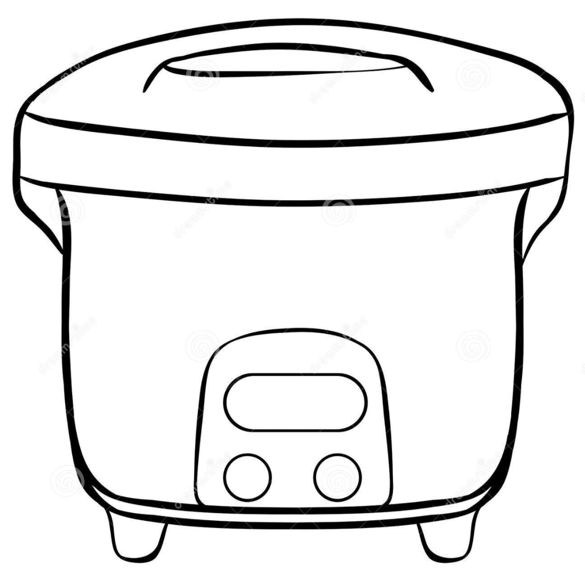
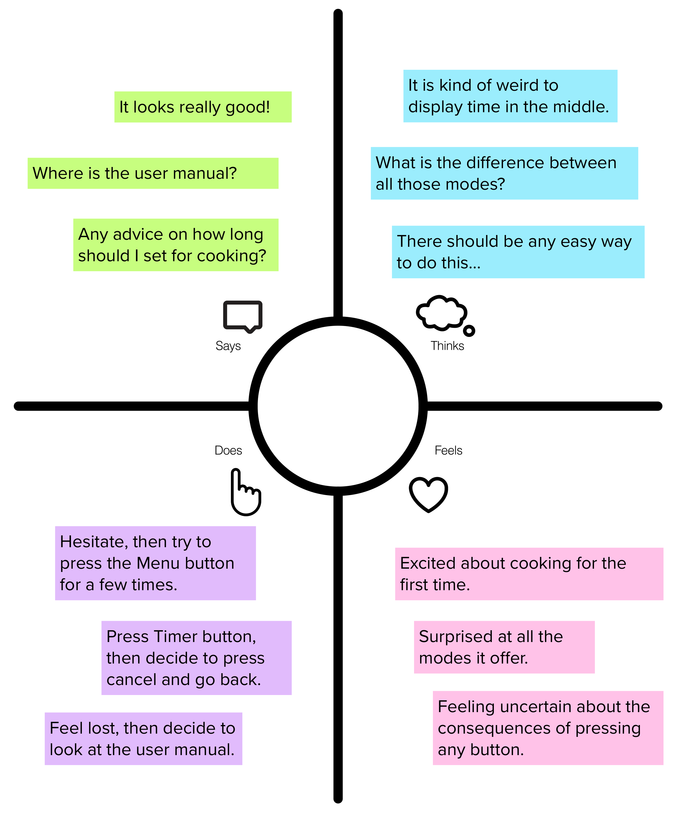

PROJECT:
Personas &
Storyboarding

In this project, I conducted a research on personas of the interface of my rice cooker. I observed real users using this rice cooker, interviewed them, then created personas based on them and illustrated a storyboard.
My Interface
I am not someone who sets a high standard for food, and I am used to the food from Brown Dining Services and those restaurants nearby, but everything changes when Covid-19 shuts down the entire campus. Restaurants were closing, dining services became limited, and it seemed that I should start to learn to cook for myself. Among the plates, bowls, frying pan, soup pot and dozens of other kitchen appliances, there was one of them that really surprised me, which is the rice cooker. As a first time user, I never imagine it to work this way.
This is a sketch of the interface of my rice cooker. There is a screen in the middle of the interface, which is displaying numbers using the format for time, and there are several descriptions around the screen. There are also a few buttons to the left and right of the screen, each of which has words printed on it.
I can't help but wondering whether other people feel the same way as me and how they may interact with this interface. To find out, I conducted this research of personas for the interface of my rice cooker.
Observation & Interview
Curious about whether other people think, I invited three friends of mine who has never seen this rice cooker before, to come to my apartment and try to use it, and as far as I know, the three of them have very different dining preference.
There are a few interesting observations about how these users interact with the interface:
- All three users immediately recognize the big button with 'Start' on it, and they all agree that this button should be used when other setup is finished and ready to start cooking.
- All three users hesitated for a while about how to select the mode for cooking rice, and while the two users who have used rice cookers before figured out how to switch mode later, the one who has never cooked before pressed the wrong button and got stuck there.
- The user with no prior experience with rice cooker has put much focus on the screen in the middle, expecting to see more information showing up on the screen, while the other two knew from the beginning that the screen is only displaying the time and focus on the buttons instead.
I also prepared four questions to get a better sense about how they view each component of the interface of the rice cooker. From the responses I received, I also notice a few interesting patterns
- How often do you cook by yourself and use a rice cooker?
The responses match my expectation of their dining preferences. One interviewee never cooks so she has never used rice cooker before, and one interviewee knows how to cook but rarely cooks as he is usually busy, and the last interviewee usually cooks his own dinner, and he has a lot of experiences with rice cookers. - If you want to switch mode, what would you do?
As I conducted the interview after observing them using the interface, now they are fairly familiar with the interface. They all considered to use the button 'Menu', but the user with no experience before also mentioned that she has no idea what would happen if she presses the button, and even the user with prior experiences mentioned that it is not intuitive what the description around the screen implies.. - What do you think would happen if you press 'Timer'?
The three users gave very different answers to this question. While the user who has prior experiences before thought it would allow to set the time that the cooking is finished (i.e. finish in ten hours means to start nine hours later), the other twos all think that it allows you to manually set up the cooking time (i.e. starts now but ends ten hours later). - How would you interpret the time in the middle of the screen?
All three users agree that the screen is currently displaying time, but the user who has prior experiences also added that during an actual cooking task, it would then display the remaining time for the task.
Persona & Empathy Map
From the data I collected during the observations and interviews of the users, I constructed two personas for each of the two archetypal characters that are based on the overarching trends. For each persona, I created an empathy map about how this user may think, feel, say and do.
Carrie Clayton is a junior student in university who has just moved to an off-campus apartment. The new apartment has a beautiful kitchen, and thus she decided to utilize it and start to learn cooking. She bought a lot of kitchen appliances, including this rice cooker, but she has never used a rice cooker before, and this is when she just opened the box and prepared to use it for the first time.
The key interface problem for this persona is that, for someone who has not used a similar product before, users may encounter difficulty in understanding the functionality of the buttons by
viewing the interface, and they may not realize that there are easy ways to set up the cooking.
This persona represents users that don't have a lot of experiences of similar items.
The persona background is a very representative figure of this group of users, and a lot of thinks and says comes from one of the friends I interviewed.
Jonathan Kerr is a young professional who lives by himself. He enjoys cooking and he prepares his own dinner everyday. However, his old rice cooker was broken and he has to purchase a new one. Today is Friday, and Jonathan has just got home from work. The new rice cooker arrived this afternoon and he planned to use it tonight. But he has asked a few friends to go to cinema together after dinner, and there is only one and a half hour before the it starts. Jonathan decided to cook a quick meal so that he won't be late for the movie.
The key interface problem for this persona is that, while there are words next to the screen that indicates different modes, users may feel uncertain about what each mode is designed for even for
an experienced user like Jonathan.
This persona represents a very common group of users. People may have experiences in similar product, but every product offers different mode selection, and the interface of this rice
cooker didn't clearly explain them. The users Jonathan feel confused when they have the needs to use specific modes, and they may or may not be able to figure it out based on previous experience.
Storyboard
I decided to create a storyboard for the Carrie Clayton's persona, and the story begins as she prepares to use it for the first time.